Блокирани в бавната зона: Уроците на Джийн Ким от внезапния преход от Fable към Opus
Джийн Ким приготвя вечеря на грил за семейството си на 12 юни 2026 г., когато телефонът му получава съобщение: моделът Fable 5 вече не е достъпен. Ден по-рано той е научил от Стив Йеги, че моделът ще бъде спрян след десет дни. Ким вече е започнал да подготвя план за миграция, разчитайки на богатия си опит в областта на DevOps и изграждането на устойчиви системи.
Неочаквано обаче правителствената заповед за експортен контрол в САЩ принуждава Anthropic да спре достъпа до Fable цели осем дни по-рано от предвиденото [1]. Инцидентът настъпва внезапно, по средата на активна работна сесия на неговите AI агенти. Последвалите три часа Ким описва като най-странното и смущаващо системно-администраторско преживяване в своята кариера. Основателят на O'Reilly Media, Тим О'Райли, анализира този случай, за да изведе ключови уроци за новата ера на софтуерното инженерство.
Персоналният суперкомпютър и метафората за „Бавната зона“
Системата, която Ким изгражда в продължение на два месеца, решава негова 16-годишна мечта – да индексира и направи търсим целия му дигитален живот. Тя обхваща 25 923 екранни снимки, 13 651 видеоклипа в YouTube, 590 записа от Zoom срещи, 6 132 харесани публикации и над 1 000 запазени статии. Целият проект се състои от 50 репозитория и 50 000 реда код, организирани като съзвездие от дългоживущи агенти (Marvin за календара и пощата, Buster за кодовите среди на Hetzner и Forge за инженерните задачи).
Когато Ким научава за предстоящото спиране на Fable, той решава да приложи принципите на Chaos Engineering – съзнателно да деактивира най-учения модел, за да провери дали по-малките могат да управляват системата. Той взаимства метафората от научнофантастичния роман на Върнър Виндж „Огънят над бездната“ [2]. В романа космическите кораби губят своите суперинтелигентни способности, когато навлязат в т.нар. „Бавна зона“ (Slow Zone) на галактиката.
Анатомия на един SEV1 инцидент: Тихите капани на моделната замяна
В 17:21 ч. източно американско време достъпът до Fable прекъсва и системата автоматично превключва към Claude Opus 4.8. Джийн Ким веднага обявява критичен инцидент (SEV1), спира автоматичните таймери и поема ръчно управление. При Opus в режим на максимално разсъждение обаче всяка команда отнема до шест минути за обработка, а корабът метафорично вече гори.
Най-коварният аспект на срива е, че повредите не се сигнализират като грешки, а изглеждат като нормална работа. Агентите продължават да записват във дневниците, че използват Fable, въпреки че работят с Opus, а единият агент дори започва да оспорва работата на другия.
Критична разлика между моделите се появява при справянето с непълна информация. Важна CLI програма съдържа остаряло съобщение за помощ, според което дадена команда не съществува. Моделът Opus прочита съобщението, приема го за истина и прекратява работа. В същата ситуация Fable забелязва контекстните доказателства в кода, че командата всъщност съществува, заключва, че помощният текст е грешен, и я изпълнява успешно – поведение, познато при най-авангардните модели като заобикаляне на препятствия.
Документацията като единствен спасителен пояс
Възстановяването на системата отнема няколко часа и не се дължи на внезапно подобрение в Opus, а на намерена документация. Оказва се, че Fable е написал около 80% от документацията и тестовите тестови ключове, но не ги е съхранил в Git.
Ким и Opus откриват незавършените чернови във временните директории на Fable и ги дописват. След като два нови агента с Opus получават достъп единствено до кодовите среди и пълната документация, системата най-накрая се стабилизира.
Уроци за архитектурата на мултиагентни среди
Тим О'Райли отбелязва, че днес отделни разработчици изграждат системи със сложност, която в миналото е изисквала цели корпоративни екипи. Това носи със себе си и корпоративни рискове от срив, които надхвърлят капацитета на един човек да ги държи в главата си.
Въз основа на анализ на над 22 000 агентни сесии, Джийн Ким дефинира два основни шаблона за съвместна работа между модели с различна мощност:

Изображение: Svetni.me / Авторско изображение
Малкият модел управлява, големият съветва: Този шаблон се оказва неефективен. При предаването на информация към големия модел се губи контекст и детайли, подобно на играта на развален телефон.
Големият модел планира, малкият изпълнява: Големият модел поема планирането, вземането на решения и проверката на резултатите, докато малкият модел единствено изпълнява конкретните стъпки от плана.
Преносимост и бъдещето на Vibe Coding
Инцидентът с Fable показва и значението на преносимостта между отделните платформи. Ким първоначално смята, че преминаването от Claude Code към друга среда ще изисква дни адаптация. Когато опитва Codex с GPT 5.6, той установява, че цената на промяната е близка до нула, тъй като всички подкани (prompts) и умения се пренасят директно.
В заключение О'Райли припомня своята теза от 2016 г., че все повече специалисти спират да извършват директно оперативни задачи и се превръщат в мениджъри на ботове [3]. Въпреки че регулаторните и техническите промени могат внезапно да променят средата, ключът към успеха остава експериментирането и удоволствието от изграждането на софтуер, който решава реални проблеми.
[1] Вж. официалното изявление на Anthropic относно експортните ограничения и преустановяването на достъпа до Fable 5 (юни 2026 г.).
[2] Вж. романът A Fire Upon the Deep (1992) от Върнър Виндж, въвеждащ концепцията за зоните на мисълта във Вселената.
[3] Вж. статията на Тим О'Райли Managing the Bots That Are Managing the Business, MIT Sloan Management Review (2016).
Източници:
- O’Reilly Radar. (2026). Stranded in the Slow Zone: How Gene Kim survived the sudden downgrade from Fable to Opus. [Публикация от Tim O’Reilly: oreilly.com/radar/stranded-in-the-slow-zone/].